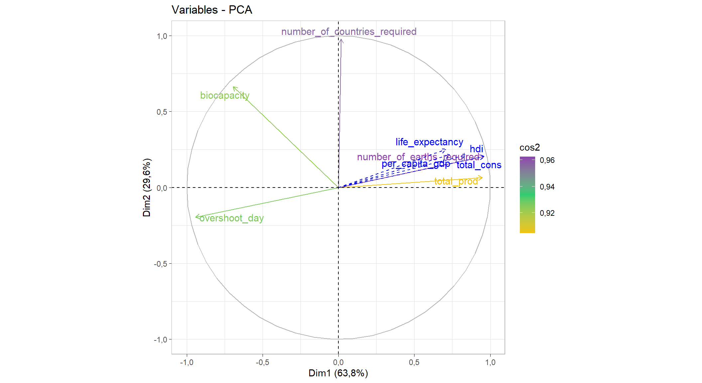
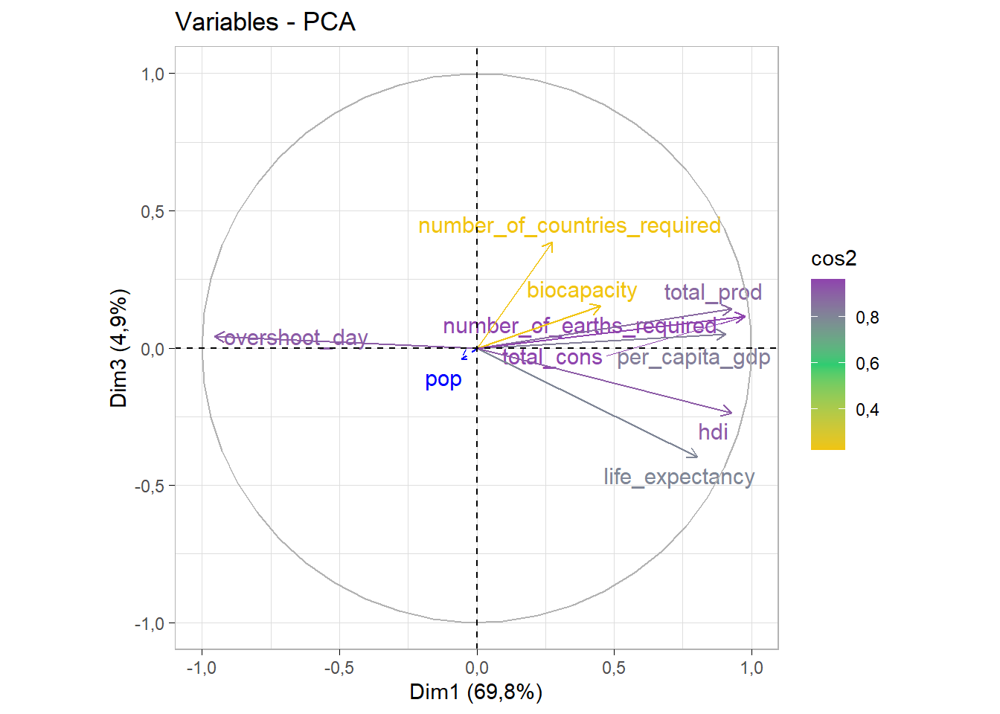

packages_ <- c("ggplot2", "dplyr","readxl","cowplot")
for (pkg in packages_) {
if (!requireNamespace(pkg, quietly = TRUE)) {
install.packages(pkg, dependencies = T)
}
library(pkg, character.only = TRUE)
}Djamaldbz - Méthodes d’Analyse factorielle TP02
Description des données
Le jeu de données utilisé dans ce premier cas pratique provient du site web de Global Footprint Network. Il contient les résultats d’empreinte écologique et de biocapacité pour 184 pays.
Les données sont disponibles sur <https://marieetienne.github.io/datasets/overshootday_overview.csv>.
Quelques définitions
Le calcul de l’empreinte écologique et de la biocapacité nous aide à répondre à la question de recherche fondamentale : Quelle est la demande des êtres humains envers les surfaces biologiquement productives (empreinte écologique) par rapport à la quantité que la planète (ou la surface productive d’une région) peut régénérer sur ces surfaces (biocapacité) ?
Hectare global (gha) : C’est l’unité choisie pour exprimer toutes les quantités d’intérêt concernant la consommation/émission de carbone. Une unité de surface correspondant à la productivité moyenne d’un hectare de terres mondiales. Un hectare de terres agricoles vaudra plus d’hectares globaux qu’un hectare de désert.
Empreinte écologique (en gha par personne) : Le nombre de gha requis pour produire les besoins et absorber les déchets d’un pays.
Biocapacité (en gha) : La capacité d’un pays à produire ce dont il a besoin et à absorber ses déchets (réserve écologique).
Jour de dépassement : Jour de l’année où la demande d’un pays dépasse sa biocapacité annuelle.
Analyse des données
Chargement des données
##-- Installer et Charger les packages requis
###--- vecteurs des packages
packages <- c("factoextra", "corrr", "FactoMineR", "dplyr","kableExtra","corrplot",
"explor")
###--- Boucle pour installer et charger les packages
for (pkg in packages) {
if (!requireNamespace(pkg, quietly = TRUE)) {
install.packages(pkg, dependencies = T)
}
library(pkg, character.only = TRUE)
}
##-- charger la base de données via le lien web
link.to.data <- "https://marieetienne.github.io/datasets/overshootday_overview.csv"
df <- read.csv(link.to.data)Analyse exploratoire des données
nrow(df); ncol(df) ;dim(df)[1] 182[1] 13[1] 182 13Les données sont composées de 182 lignes et de 13 colonnes.
Résumé statitique des variables
On utilise la commande summary(df) tout simplement.
##-- summary pour les variable numériques
summary.df.num <- sapply(df[sapply(df, is.numeric)], function(x) {
c(
min = min(x, na.rm = TRUE),
Q1 = quantile(x, 0.25, na.rm = TRUE),
Q3 = quantile(x, 0.75, na.rm = TRUE),
med = quantile(x, 0.5, na.rm = TRUE),
mean = mean(x, na.rm = TRUE),
max = max(x, na.rm = TRUE),
count = sum(!is.na(x)),
sd = sd(x, na.rm = TRUE),
`NA's` = round(sum(is.na(x)),0)
)
})
summary.df.num <- as.data.frame(summary.df.num)Ensuite nous affichons ce resumé dans un tableau :
| life_expectancy | hdi | per_capita_gdp | pop | total_prod | total_cons | biocapacity | number_of_countries_required | number_of_earths_required | overshoot_day | |
|---|---|---|---|---|---|---|---|---|---|---|
| min | 52,525000 | 0,3850000 | 732,836 | 0,06200 | 0,371747 | 0,5540298 | 0,1041268 | 0,0180633 | 0,3668548 | 41,0000 |
| Q1.25% | 65,747000 | 0,5945000 | 4888,255 | 2,64100 | 1,156834 | 1,2195240 | 0,6633750 | 0,8273357 | 0,8075166 | 143,0000 |
| Q3.75% | 76,400695 | 0,8350000 | 31670,000 | 32,91550 | 3,828778 | 3,8418335 | 2,6656718 | 2,7330613 | 2,5438978 | 365,0000 |
| med.50% | 71,900000 | 0,7310000 | 13548,200 | 10,01950 | 1,924223 | 2,3197815 | 1,3622344 | 1,7280656 | 1,5360601 | 239,0000 |
| mean | 71,180320 | 0,7177193 | 21139,464 | 43,47636 | 2,879469 | 2,9624675 | 3,5569055 | 2,9127705 | 1,9616192 | 239,7802 |
| max | 84,445610 | 0,9620000 | 120505,000 | 1480,63200 | 13,394536 | 13,1263342 | 85,6461100 | 55,1061868 | 8,6916969 | 365,0000 |
| count | 175,000000 | 171,0000000 | 163,000 | 182,00000 | 182,000000 | 181,0000000 | 181,0000000 | 181,0000000 | 181,0000000 | 182,0000 |
| sd | 7,615465 | 0,1533110 | 22330,819 | 156,03751 | 2,515235 | 2,1957327 | 10,0256869 | 5,1916277 | 1,4539202 | 109,5507 |
| NA’s | 7,000000 | 11,0000000 | 19,000 | 0,00000 | 0,000000 | 1,0000000 | 1,0000000 | 1,0000000 | 1,0000000 | 0,0000 |
Note: aby Djamal DBZ
Nous constatons que ceraines variables ont des données manquantes, nous pouvons décider de soit les supprimer soit les prédire avec des méthodes d’imputation en fonction de leurs importances. Mais pour le moment nous allons juste les supprimer.
df <- na.omit(df)Ainsi nous passons de 154 à 138 lignes.
Contruction de l’Analyse en composante principale
Le poids pour les pays : Les tailles respectives des populations de chaques pays car cela garantit que l’analyse est représentative des différences globales, en tenant compte de l’impact démographique des pays.
Métrique : Normalisation des données car les variables ne sont pas toutes sur la même échelle. Cela permet d’éviter que les variables avec de grosses valeurs (grandes échelles) dominent l’analyse.
variables sup :
- Quali sup : region
- Quanti sup : hdi, per_capita_gdp, life_expectancy, total_cons,income_group
Réalisation de l’ACP
- Vérifions la corrélations entre les variables quantitatives
numeric.vars <- as.data.frame(df[sapply(df, is.numeric)])
M <- round(cor(numeric.vars),2)
graph_cor <- corrplot(M,method = "circle",type = "upper")
graph_cor[[1]] life_expectancy hdi per_capita_gdp pop
life_expectancy 1,00 0,91 0,73 0,01
hdi 0,91 1,00 0,79 -0,01
per_capita_gdp 0,73 0,79 1,00 -0,04
pop 0,01 -0,01 -0,04 1,00
total_prod 0,52 0,62 0,63 -0,05
total_cons 0,62 0,72 0,80 -0,06
biocapacity 0,00 0,09 0,07 -0,06
number_of_countries_required 0,33 0,29 0,50 0,00
number_of_earths_required 0,62 0,72 0,80 -0,06
overshoot_day -0,71 -0,83 -0,76 0,05
total_prod total_cons biocapacity
life_expectancy 0,52 0,62 0,00
hdi 0,62 0,72 0,09
per_capita_gdp 0,63 0,80 0,07
pop -0,05 -0,06 -0,06
total_prod 1,00 0,84 0,23
total_cons 0,84 1,00 0,12
biocapacity 0,23 0,12 1,00
number_of_countries_required 0,10 0,33 -0,15
number_of_earths_required 0,84 1,00 0,12
overshoot_day -0,77 -0,90 -0,18
number_of_countries_required
life_expectancy 0,33
hdi 0,29
per_capita_gdp 0,50
pop 0,00
total_prod 0,10
total_cons 0,33
biocapacity -0,15
number_of_countries_required 1,00
number_of_earths_required 0,33
overshoot_day -0,28
number_of_earths_required overshoot_day
life_expectancy 0,62 -0,71
hdi 0,72 -0,83
per_capita_gdp 0,80 -0,76
pop -0,06 0,05
total_prod 0,84 -0,77
total_cons 1,00 -0,90
biocapacity 0,12 -0,18
number_of_countries_required 0,33 -0,28
number_of_earths_required 1,00 -0,90
overshoot_day -0,90 1,00data.pca <- df[,-1] ## sélectionner toute les variables sauf la variable pays
rownames(data.pca) <- df[,1] ## renommer les lignes avec les noms des pays (individus)
poids <- df$pop
pca.model <- PCA(data.pca, scale.unit = TRUE,
quali.sup = c("region", "income_group"),
graph = FALSE,
row.w = data.pca$pop,
quanti.sup = 6)
explor(pca.model)Shiny applications not supported in static R Markdown documents
- Recupération d’abord des valeurs propres et ensuite les variances
eigen.values <- pca.model$eig
knitr::kable(eigen.values[1:3,2:3], caption = capTab("Inerties expliquées par les 3 premiers axes"))| percentage of variance | cumulative percentage of variance | |
|---|---|---|
| comp 1 | 69,758338 | 69,75834 |
| comp 2 | 16,485374 | 86,24371 |
| comp 3 | 4,865912 | 91,10962 |
On remarque que les axes 1,2 et 3 représentent respectivement 69,76, 16,49 et 4,09.
On pourrait aussi visualiser le graphique des valeurs propres :
fviz_eig(pca.model)
Qualité de representation sur les plans :
- (1-2)
LES VARIABLES
graph.cos2.var <- fviz_pca_var(pca.model,col.var="cos2", gradient.cols=c("#F1C40F","#2ECC71","#8E44AD"), repel=TRUE, ggtheme = theme_light())
graph.cos2.var
Concernant les variables, on constate qu’elles toutes sont bien representées avec des cosinus carrés qui ont une valeur minimale environ 0,8 à part les variables biocapacity, life_expectancy, number_of_countries_required qui ont un cosinus carrés qui vaut environ 0,7.
LES INDIVIDUS
threshold <- 0.85
data.ind.cos2 <- pca.model$ind$cos2
Dim1 <- data.ind.cos2[,"Dim.1"]
Dim2 <- data.ind.cos2[,"Dim.2"]
Dim1 <- Dim1[Dim1 >= threshold]
Dim2 <- Dim2[Dim2 >= 0.6]
Dim1 Angola Austria
0,8591836 0,9047663
Belgium Benin
0,8604596 0,8831711
Burundi Cambodia
0,8916493 0,8911437
Czech Republic Denmark
0,9218239 0,8896874
Ethiopia Gambia
0,9390190 0,9377395
Ghana Guatemala
0,8579621 0,9044971
Haiti India
0,9763067 0,9558559
Kenya Malawi
0,9448689 0,9425394
Malaysia Myanmar
0,8840507 0,8964483
Nepal Pakistan
0,9772128 0,9745537
Poland Rwanda
0,9272053 0,9810454
Sao Tome and Principe Senegal
0,9617076 0,8705626
Sierra Leone Slovakia
0,8542504 0,8524619
Slovenia Sudan
0,8840522 0,8713134
Tanzania, United Republic of Timor-Leste
0,9419010 0,8640862
Togo United States of America
0,9425662 0,8875048
Yemen
0,9228666 Dim2 Barbados Bolivia Brazil Namibia Paraguay
0,6458843 0,6609662 0,6672407 0,7502317 0,6807204 AXE 1 : On voit que les pays (individus) comme le Togo, le Yemen, les USA, le Rwanda sont tres bien representés. RMRQ : Il y en a d’autres
AXE 2 : les pays les mieux représentés sur cet axe sont le Barbados, la Bolivie, le Brésil, la Namibie et le Paraguay
(1-3)
LES VARIABLES
graph.cos2.var <- fviz_pca_var(pca.model,col.var="cos2",axes = c(1,3), gradient.cols=c("#F1C40F","#2ECC71","#8E44AD"), repel=TRUE, ggtheme = theme_light())
graph.cos2.var
AXE 1 : Sur cet axe les variables overshoot_day, number_of_earths_required (toutes les variables en violet) sont bien représentées.
AXE 3 : La biocapacité est légèrement bien représentée avec un \(cos^2 \sim 0,6\) parcontre la variable number_of_countries_required n’est pas bien représentée.
LES INDIVIDUS
threshold <- 0.85
data.ind.cos2 <- pca.model$ind$cos2
Dim1 <- data.ind.cos2[,"Dim.1"]
Dim3 <- data.ind.cos2[,"Dim.3"]
Dim1 <- Dim1[Dim1 >= threshold]
Dim3 <- Dim3[Dim3 >= threshold]
Dim1 Angola Austria
0,8591836 0,9047663
Belgium Benin
0,8604596 0,8831711
Burundi Cambodia
0,8916493 0,8911437
Czech Republic Denmark
0,9218239 0,8896874
Ethiopia Gambia
0,9390190 0,9377395
Ghana Guatemala
0,8579621 0,9044971
Haiti India
0,9763067 0,9558559
Kenya Malawi
0,9448689 0,9425394
Malaysia Myanmar
0,8840507 0,8964483
Nepal Pakistan
0,9772128 0,9745537
Poland Rwanda
0,9272053 0,9810454
Sao Tome and Principe Senegal
0,9617076 0,8705626
Sierra Leone Slovakia
0,8542504 0,8524619
Slovenia Sudan
0,8840522 0,8713134
Tanzania, United Republic of Timor-Leste
0,9419010 0,8640862
Togo United States of America
0,9425662 0,8875048
Yemen
0,9228666 Dim3 Albania
0,8684971 - AXE 3 : On voit que seul l’Albanie est bien représentée.
Deux ACP différentes
variables.empreinte <- df[, c("total_prod", "total_cons", "biocapacity", "number_of_earths_required", "overshoot_day", "pop")]
rownames(variables.empreinte) <- df$country
variables.developpement <- df[, c("life_expectancy", "hdi", "per_capita_gdp","pop")]
rownames(variables.developpement) <- df$countryACP sur les variables d’empruntes écologiques
acp_empreinte <- PCA(variables.empreinte, graph = FALSE, scale.unit = TRUE, row.w = variables.empreinte$pop)
##-- valeurs propres
acp_empreinte$eig[1,1][1] 4,100602La première valeur propre est : 4,10
ACP sur les variables d’empruntes écologiques
acp.developpement <- PCA(variables.developpement, graph = FALSE, scale.unit = TRUE, row.w = variables.developpement$pop)
##-- valeurs propres
acp.developpement$eig[1,1][1] 2,59372La première valeur propre est : 2,59
ACP avec pondérations des variables
poids.var <- c(rep(1, length(variables.empreinte)), rep(2, length(variables.developpement)))
acp.ponderee <- PCA(data.pca, col.w = poids.var, graph = FALSE, row.w = data.pca$pop, scale.unit = TRUE,quanti.sup = "pop",
quali.sup = c("region", "income_group"),)
Comment l’ACP est-elle modifiée si on retire Singapour de l’analyse ?